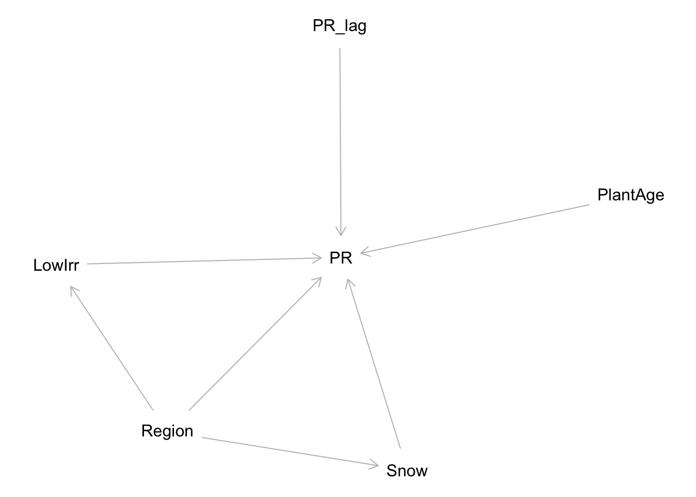
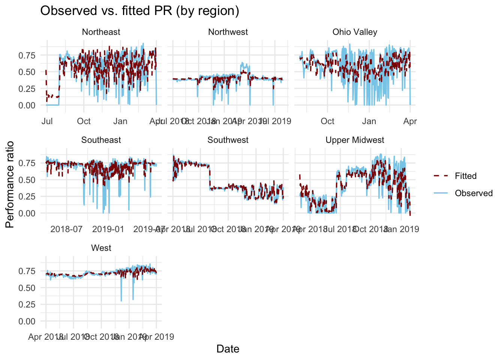

library(tidyverse)
library(tsibble)
library(fable)
library(feasts)
library(broom)
library(kableExtra)
library(readxl)
library(janitor)
library(dagitty)Snow and luminance on PV Performance: A ARIMA model Time-Series analysis
Purpose
This blog post expands on the findings of Jackson & Gunda (2021), who found a strong negative impact of extreme weather, particularly snow, on photovoltaic (PV) performance. Their work used complex machine learning, which I recommend reading their article to fully understand. We use an AR(1) model—the simplest form of an ARIMA (Autoregressive Integrated Moving Average) model, that uses just (p) and accounts for the day-to-day persistence in the Performance Ratio (PR) as a function of cumulative snow depth and low irradiance as inputs. This allows us to test the effect of snow from one day on performance over time, and to visualize how snowfall affects the regions over time.
Reference
Jackson, N. D., & Gunda, T. (2021). Evaluation of extreme weather impacts on utility-scale photovoltaic plant performance in the United States. Applied Energy, 302, 117508. https://doi.org/10.1016/j.apenergy.2021.117508
Hypothesis
After accounting for day-to-day persistence in PR, higher cumulative snow depth reduces daily PR, and low-irradiance days further reduce PR.
Setup
Data import and wrangling
Drop rows with missing inputs, and find means within region/date so all plants in each region are accounted for.
# Load data
oedi_data <- read_excel("data/oedi_data.xlsx", sheet = "data") |>
clean_names()
plant_ts <- oedi_data |>
drop_na(noaa_clim_region, date, pr, cumulative_snow_mm, low_irradiation) |>
mutate(
date = as.Date(date),
region = noaa_clim_region) |>
select(region, date, pr, cumulative_snow_mm, low_irradiation) |>
group_by(region, date) |>
summarise(
pr = mean(pr),
cumulative_snow_mm = mean(cumulative_snow_mm),
low_irradiation = mean(low_irradiation),
.groups = "drop"
) |>
arrange(region, date) |>
as_tsibble(key = region, index = date)
glimpse(plant_ts)Rows: 2,471
Columns: 5
Key: region [7]
$ region <chr> "Northeast", "Northeast", "Northeast", "Northeast",…
$ date <date> 2018-06-28, 2018-06-29, 2018-06-30, 2018-07-01, 20…
$ pr <dbl> 0, 0, 0, 0, 0, 0, 0, 0, 0, 0, 0, 0, 0, 0, 0, 0, 0, …
$ cumulative_snow_mm <dbl> 0, 0, 0, 0, 0, 0, 0, 0, 0, 0, 0, 0, 0, 0, 0, 0, 0, …
$ low_irradiation <dbl> 0.00, 0.00, 0.75, 0.75, 0.75, 0.75, 0.75, 0.75, 0.7…Model concept
Our approach models today’s Performance Ratio (pr) using AR(1) that incorporates yesterday’s PR to account for the persistence of poor performance. We use cumulative snow depth (mm) and a low-irradiance flag as predictors, to quantify the temporal effect and the immediate effect of current weather conditions.
DAG (conceptual)
pr_dag <- dagitty("
dag {
Region -> Snow
Region -> LowIrr
Region -> PR
Snow -> PR
LowIrr -> PR
PR_lag -> PR
PlantAge -> PR
}
")
plot(pr_dag)
Nodes: Snow (cumulative snow), LowIrr (low irradiance), PR_lag (yesterday’s PR), PlantAge (age of solar farm) Region (Region of U.S)
Since we grouped by Region, the variable Region is constant and since photovolatic plant age varies slowly I chose to leave them out for now, but included them in my DAG because Jackson & Gunda pointed to them as the most impactful non-weather variables.
Fit ARIMA model
model_fit <- plant_ts |>
model(
arima = ARIMA(pr ~ pdq(1, 0, 0) + cumulative_snow_mm + low_irradiation)
)
model_fit# A mable: 7 x 2
# Key: region [7]
region arima
<chr> <model>
1 Northeast <LM w/ ARIMA(1,0,0)(1,0,1)[7] errors>
2 Northwest <LM w/ ARIMA(1,0,0)(0,0,1)[7] errors>
3 Ohio Valley <LM w/ ARIMA(1,0,0) errors>
4 Southeast <LM w/ ARIMA(1,0,0) errors>
5 Southwest <LM w/ ARIMA(1,0,0)(2,0,0)[7] errors>
6 Upper Midwest <LM w/ ARIMA(1,0,0)(1,0,1)[7] errors>
7 West <LM w/ ARIMA(1,0,0)(2,0,0)[7] errors>Coefficient Table
coef_tbl <- tidy(model_fit) |>
select(region, term, estimate, std.error, statistic, p.value) |>
arrange(region, term)
coef_tbl |>
kable(digits = 3, caption = "ARIMA(1,0,0) with snow and irradiance (by region)") |>
kable_styling(full_width = FALSE)| region | term | estimate | std.error | statistic | p.value |
|---|---|---|---|---|---|
| Northeast | ar1 | 0.555 | 0.062 | 8.982 | 0.000 |
| Northeast | cumulative_snow_mm | 0.000 | 0.000 | 0.583 | 0.561 |
| Northeast | intercept | 0.649 | 0.051 | 12.677 | 0.000 |
| Northeast | low_irradiation | -0.306 | 0.029 | -10.479 | 0.000 |
| Northeast | sar1 | 0.805 | 0.105 | 7.658 | 0.000 |
| Northeast | sma1 | -0.677 | 0.124 | -5.437 | 0.000 |
| Northwest | ar1 | 0.400 | 0.048 | 8.340 | 0.000 |
| Northwest | cumulative_snow_mm | 0.000 | 0.000 | 0.638 | 0.524 |
| Northwest | intercept | 0.400 | 0.011 | 36.473 | 0.000 |
| Northwest | low_irradiation | -0.017 | 0.011 | -1.585 | 0.114 |
| Northwest | sma1 | 0.142 | 0.050 | 2.843 | 0.005 |
| Ohio Valley | ar1 | 0.258 | 0.063 | 4.122 | 0.000 |
| Ohio Valley | cumulative_snow_mm | 0.000 | 0.000 | 0.235 | 0.814 |
| Ohio Valley | intercept | 0.693 | 0.027 | 25.460 | 0.000 |
| Ohio Valley | low_irradiation | -0.237 | 0.032 | -7.493 | 0.000 |
| Southeast | ar1 | 0.256 | 0.045 | 5.620 | 0.000 |
| Southeast | cumulative_snow_mm | 0.000 | 0.000 | -1.274 | 0.203 |
| Southeast | intercept | 0.746 | 0.007 | 104.840 | 0.000 |
| Southeast | low_irradiation | -0.192 | 0.015 | -12.442 | 0.000 |
| Southwest | ar1 | 0.948 | 0.019 | 49.729 | 0.000 |
| Southwest | cumulative_snow_mm | 0.000 | 0.000 | -0.129 | 0.897 |
| Southwest | intercept | 0.484 | 0.063 | 7.672 | 0.000 |
| Southwest | low_irradiation | -0.082 | 0.019 | -4.407 | 0.000 |
| Southwest | sar1 | 0.075 | 0.062 | 1.204 | 0.229 |
| Southwest | sar2 | -0.096 | 0.067 | -1.417 | 0.157 |
| Upper Midwest | ar1 | 0.588 | 0.051 | 11.563 | 0.000 |
| Upper Midwest | cumulative_snow_mm | 0.000 | 0.000 | -4.112 | 0.000 |
| Upper Midwest | intercept | 0.663 | 0.052 | 12.746 | 0.000 |
| Upper Midwest | low_irradiation | -0.110 | 0.027 | -4.088 | 0.000 |
| Upper Midwest | sar1 | 0.822 | 0.146 | 5.623 | 0.000 |
| Upper Midwest | sma1 | -0.724 | 0.158 | -4.574 | 0.000 |
| West | ar1 | 0.155 | 0.069 | 2.252 | 0.025 |
| West | cumulative_snow_mm | 0.001 | 0.000 | 1.807 | 0.072 |
| West | intercept | 0.720 | 0.007 | 99.069 | 0.000 |
| West | low_irradiation | -0.063 | 0.014 | -4.445 | 0.000 |
| West | sar1 | 0.284 | 0.062 | 4.577 | 0.000 |
| West | sar2 | 0.276 | 0.053 | 5.203 | 0.000 |
Defined Terms: intercept: Baseline Performance Ratio (PR) level.
ar1: Persistence (how much yesterday’s PR carries over to today).
cumulative_snow_mm: Direct PR change from snow depth.
low_irradiation: Direct PR change on low-sunlight days.
Our coefficients confirms that persistence (ar1) is highly significant across all regions, meaning a poor day’s PR does effect the next. Low irradiance also usually causes a significant PR drop (p-value of 0 for low_irradiation). One interesting thing, only the Upper Midwest shows a statistically significant negative impact from the cumulative_snow_mm term which could mean that apart from the midwest, snow’s primary effect is captured by the day-to-day carry-over, probably becuase it is very snowy there
Fitted vs. observed PR
aug_tbl <- augment(model_fit)
aug_tbl |>
ggplot(aes(date)) +
geom_line(aes(y = pr, color = "Observed"), linewidth = 0.6) +
geom_line(aes(y = .fitted, color = "Fitted"), linewidth = 0.6, linetype = "dashed") +
scale_color_manual(values = c("Observed" = "skyblue", "Fitted" = "darkred")) +
labs(
title = "Observed vs. fitted PR (by region)",
x = "Date",
y = "Performance ratio",
color = NULL
) +
theme_minimal() +
facet_wrap(vars(region), scales = "free_x")
The dashed red lines on the plot represent how well the AR(1) model tracks the observed Performance Ratio (PR) over time.
Results
This time-series analysis provides statistical support that persistence is a related to daily PR, as yesterday’s PR influences today’s across all regions. Our findings show that after accounting for day-to-day carry-over, higher cumulative snow depth reduces daily PR (most significantly in the Upper Midwest), and low-irradiance days cause an immediate, additional PR drop across the majority of regions.